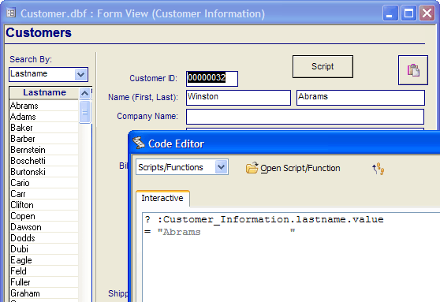
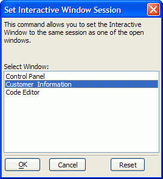

Using the Interactive Window
When you want to see the result of an Xbasic method, command or expression immediately, you can type an Xbasic statement directly into Alpha Anywhere's Interactive window. Alpha Anywhere uses auto-completion logic to help you enter commands in the Interactive window. Like in the Code Editor, Alpha Anywhere displays Bubble Help showing the syntax of every command you enter.
To display the Interactive window:
From the Control Panel, select View > Code Editor. The Code Editor window appears.
Display the Interactive tab if it is not already selected.

Any valid Xbasic script statement can be executed interactively. To execute a statement:
Put the cursor on an empty line in the Interactive window.
Type an Xbasic statement.
Press ENTER. The cursor can be anywhere within the line when you press ENTER. It does not have to be at the end of the line.
If you want to see the value of a variable or expression, place a question mark at the left margin (at the beginning of the statement).

 TIP : Pressing
Control-ENTER when the cursor is in a line will
move the insertion point to a new line without executing the Xbasic statement
on the current line.
TIP : Pressing
Control-ENTER when the cursor is in a line will
move the insertion point to a new line without executing the Xbasic statement
on the current line.
If you have a code block in the Interactive editor, you can edit it freely. To run it again, you just have to go to the end of the last line and press ENTER.
To combine multiple commands into a single line, use a semi-colon between commands. For example:
|
for i = 1 to 10; trace.writelni?; next i |
You can easily enter command blocks ( For ... Next, While ... Wend, If ... Then ... End if ) in the Interactive window. When you press ENTER after beginning a command block, Alpha Anywhere will automatically enter the pound (#) symbol on the next line to indicate that you are in a command block. None of the lines that begin with the # character are executed, until you enter the last line of the block. For example:
|
for i = 1 to 10 # trace.writelni? #next i |
You can select multiple lines of code in the Interactive
window and execute them all at once (rather than line by line), by clicking
the Run  icon on the toolbar, or by right-clicking on
the selected code.
icon on the toolbar, or by right-clicking on
the selected code.
Adding and Removing Code Indents
You can indent code by selecting one or more lines and clicking TAB. You can remove an indent level by selecting one or more lines and clicking SHIFT + TAB. The same functions are found on the right click menu.
Running Functions in the Interactive Window
You can even go as far as Defining a function right in the Interactive window:
|
function welcome as C (name as C) #welcome = "Welcome to the interactive window, " + w_upper(name) #end function ? welcome("tom") = "Welcome to the interactive window, Tom" |
Setting the Variable Frame for the Interactive Window
The Interactive window has its own variable frame. You can override the Interactive window's variable frame and set it to be the same as the variable frame of another session. This can be very useful in debugging an application.
For example, assume that you have opened a form called Invoice.
From the Interactive window, select Interactive > Set Interactive Session.
Select "Invoice".

Now, the Interactive window lets you directly examine variables in the "Invoice" form. For example:
|
? toparrent.name() = "Invoice" ? table.current().name_get() "INVOICE_HEADER" |
In addition, you can set the font and point size of the text in the Interactive window.
See Also
Sending Output to the Trace Window